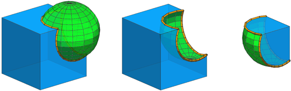

union / subtract / intersect (Boolean operations)
Syntax
union { operationsA | operationsB }
subtract { operationsA | operationsB }
intersect { operationsA | operationsB }
Parameters
- operationsA
A sequence of operations applied on the current shape for operand A. - operationsB
A sequence of operations applied on the current shape for operand B.
Description
The union, intersect, and subtract operations perform a Boolean operation with the result of the inlined operationsA (operand A) and the result of the inlined operationsB (operand B). The operands are constructed analogous to using inline(unify), i.e. the shapes resulting from the derivation of operationsA (or operationsB) are first merged using a Boolean union operation.
The first operand A determines the resulting shape and rule attributes and specifies which material is used for overlapping geometry. In case the operands have conflicting material attributes, their materials are first written to the geometry, ensuring that all material properties are preserved.
Component tags
The operations automatically apply semantic component tags to the resulting face and edge components:
|
Left --> union { Cube | Sphere }
comp(f) { isTagged("bool.A") : Blue
| isTagged("bool.B") : Green }
comp(e) { isTagged("bool.cut") : Orange }
Cube --> primitiveCube
Sphere --> t(0.3,0.3,0.3) primitiveSphere
Middle --> subtract { Cube | Sphere } ...
Right --> intersect { Cube | Sphere } ... |
For overlapping faces (2D intersection) both "bool.A" and "bool.B" are applied.
For more information on working with component tags, refer to Auto-tags and Tag propagation.
Open and closed operands
Boolean operations are well defined in 2D (planar planes) and in 3D for closed meshes. In 3D, open operands (planes and meshes with holes) are assumed closed as long as boundaries are not intersected. See the reference table and the example below.
The common use cases of "Plane subtract Volume" and "Plane intersect Volume" are facilitated using the "bool" auto-tags in a subsequent comp operation. This is illustrated in the following example:
subtract { Blue | Green }
|
intersect { Blue | Green }
|
comp(f) { isTagged("bool.A") : Blue }
|
|
Reference Table
Both operands closed |
Open and closed operand Plane normal pointing up |
Open and closed operand Plane normal pointing down |
Open and closed operand Only partially intersecting |
|
| Input operands | ||||
union { Blue
| Green }
|
||||
subtract { Blue
| Green }
|
||||
subtract { Green
| Blue }
|
||||
intersect { Blue
| Green }
|
||||
inline(unify) {
Green
Blue
}
|
||||
Related
Examples
Colors
These are the rules for the colors used in the following examples.
Blue --> color("#0399F5")
Green --> color("#09DE1F")
Yellow --> color("#FADB19")
Purple --> color("#8D09DE")
Red --> color("#FF360A")
Orange --> color("#FA9100")
Order of operands
 |
Left --> subtract { Cube | Cylinder }
Right --> subtract { Cylinder | Cube }
Cube --> primitiveCube
Blue
Cylinder --> t(3,3,3)
primitiveCylinder
Green
A cylinder is subtracted from a cube and and vice versa.
|
 |
Left --> union { Quad | Circle }
Right --> union { Circle | Quad }
Quad --> primitiveQuad
Blue
Circle --> t(3,0,3)
primitiveDisk
Green
The first operand A determines the material of overlapping faces.
|
 |
attr Height = 0
Left --> intersect { Quad | Circle }
extrude(Height) // Height == 10
Right --> intersect { Circle | Quad }
extrude(Height) // Height == 1
Quad --> set(Height, 10)
primitiveQuad
Circle --> set(Height, 1)
t(3,0,3)
primitiveDisk
The first operand A determines the attributes of the resulting shape.
|
Inlining of operands
Left --> primitiveCube
union { Blue
| t(1,1,1) Green }
Right --> primitiveCube
union { Blue
| t(1,1,1) Green
t(1,1,1) Green
t(1,1,1) Green }
An operand can result in a single shape (Left) or multiple shapes (operand B in Right). In case of multiple shapes, they are first merged analogous to using inline(unify).
|
Init --> primitiveCube
union { Blue
| t(1,1,1+10) Green
t(1,1,1) Green
t(1,1,1) Green }
In case an operand results in multiple shapes, they are unified even if they do not intersect operand A.
|
Mass Modeling
Init -->
intersect { Envelope | Sphere }
Envelope -->
extrude(40)
Sphere -->
s('1, 40, '2)
center(z)
t(0, '-0.2, 0)
primitiveSphere
Step 1: The extruded initial shape (current shape, acting as operand A) is intersected with an inserted sphere (result of the rule Sphere, acting as operand B).
|
 |
Init -->
intersect { Envelope | Sphere }
inline(unify) split(y) { ~1: LowerHalf
| 20: UpperHalf }
LowerHalf --> X.
UpperHalf --> t(10, 0, 0)
r(scopeCenter, 0, 7.2, 0)
Step 2: The current shape is split into two parts. Using inline(unify) the resulting shapes LowerHalf and UpperHalf of the split operation are unified (note the disappearing inner faces).
|
Init -->
intersect { Envelope | Sphere }
inline(unify) split(y) { ~1: LowerHalf
| 20: UpperHalf }
subtract { CurrentMass. | Hole }
Hole -->
s(16, 16, '1.2)
center(z)
t(30, 5, 0)
rotateScope(-90, 0, 0)
primitiveCylinder
Step 3: We continue refining the mass (current shape after Step 1 and 2, acting as operand A) by subtracting a cylinder (result of the rule Hole, acting as operand B).
|
 |
Init -->
intersect { Envelope | Sphere }
inline(unify) split(y) { ~1: LowerHalf
| 20: UpperHalf }
subtract { CurrentMass. | Hole }
comp(f) { isTagged("Envelope") && side : Blue
| isTagged("Lower") && top : Red
| isTagged("Upper") && bottom : Orange
| isTagged("Lower") : Green
| isTagged("Upper") : Yellow
| isTagged("Hole") : Purple }
Envelope -->
extrude(40)
tag("envelope")
Sphere -->
s('1, 40, '2)
center(z)
t(0, '-0.2, 0)
primitiveSphere
LowerHalf --> tag("Lower")
UpperHalf -->
t(10, 0, 0)
r(scopeCenter, 0, 7.2, 0)
tag("Upper")
Hole -->
s(16, 16, '1.2)
center(z)
t(30, 5, 0)
rotateScope(-90, 0, 0)
primitiveCylinder
tag("Hole")
Adding tags: Using Boolean 3D operations, it is easy to create a mass model with complex surfaces. In this example, tags are added in each step, which allows to assign the correct rule to the different surfaces at the end (illustrated here by different colors).
|
Boolean 3D and Auto-Tags
 |
Init -->
extrude(40)
subtract { Mass.
| t(20, -15, -15)
rotate(rel, scope, 15, 12, 25) }
SurfaceSplitter
SurfaceSplitter -->
comp(f) { isTagged("extrude.top")
&& isTagged("bool.A"): Purple
| isTagged("extrude.top")
&& isTagged("bool.B"): Green
| isTagged("extrude.side")
&& isTagged("bool.A"): Blue
| isTagged("extrude.side")
&& isTagged("bool.B"): Yellow }
In this example, the initial shape is first extruded, which adds the "extrude" auto-tags to all faces. Then, a translated and rotated copy of the shape is subtracted, which additionally adds the "bool" auto-tags to the resulting faces. Finally, these tags are used to extract the different surfaces and color them appropriately.
|
Layout Modeling
Init -->
primitiveDisk(5)
union { HouseFootprint. | FrontyardFootprint }
ShowBoolAutotags
FrontyardFootprint -->
s(10, 0, 10)
center(x)
t(0, 0, '-0.33)
ShowBoolAutotags -->
comp(f) { isTagged("bool.A")
&& isTagged("bool.B"): Yellow
| isTagged("bool.A") : Blue
| isTagged("bool.B") : Green }
Step 1: A pentagon (primitiveDisk(5)) is inserted and then a union is done with a shrunk copy. The union operation keeps all original edges, which means the resulting geometry consists of 3 faces, as shown in colors.
|
Init -->
primitiveDisk(5)
deleteUV(0)
union { HouseFootprint. | FrontyardFootprint }
modify(f) { isTagged("bool.B")= B
| isTagged("bool.A")= A }
ShowTags
A --> tag("eHouse", edges)
B --> deleteTags("bool.A")
deleteTags("bool.cut")
cleanupGeometry(edges, 0) // merge faces
tag("eFrontyard", edges)
ShowTags -->
ShowBoolAutotags
comp(e) { isTagged("eFrontyard")
&& isTagged("eHouse"): YellowEdge
| isTagged("eHouse") : BlueEdge
| isTagged("eFrontyard") : GreenEdge }
Step 2: The goal is to merge the yellow and green faces and tag the edges in preparation for Step 3. The modify operation is used to edit the respective parts.Note: In order to use cleanupGeometry to merge the faces in rule B, deleteUV is needed to remove the UV coordinates on the inserted asset, and deleteTags is required to remove "bool.A" and "bool.cut", which would otherwise prevent the process. |
Init -->
primitiveDisk(5)
deleteUV(0)
union { HouseFootprint. | FrontyardFootprint }
modify(f) { isTagged("bool.B")= B
| isTagged("bool.A")= A }
comp(f) { isTagged("bool.A"): House
| isTagged("bool.B"): Frontyard }
House -->
extrude(3)
comp(f) { isTagged("eFrontyard"): Yellow
| all : Blue }
Frontyard -->
offset(-2)
comp(f) { isTagged("eHouse"): Yellow
| all : Green }
Step 3: The house footprint is extruded and the frontyard footprint is offset. The edge tags from Step 2 are automatically propagated to the new faces, allowing to distinguish the facades facing the frontyard and the offset borders touching the house.This information could be used in subsequent steps to model the entrance area. |
Behavior with open operands
Left --> primitiveCube
union { Blue
| t(2,2,2)
comp(f) { front: NIL | all= Green } }
Right --> primitiveCube
union { Blue
| t(2,2,2)
comp(f) { left: NIL | all= Green } }
Operand A is a closed cube, while operand B is an open cube.Left: The open boundary of B is not intersecting operand A. Right: The open boundary of B is intersecting operand A. |
 |
Left --> primitiveCube
union { Blue
| primitiveQuad
s(12,0,12)
center(xyz)
Green }
Right --> primitiveCube
union { Blue
| primitiveQuad
s(12,0,10)
t(-1,5,2)
Green }
Operand A is a closed cube, while operand B is a 2D quad.
Left: The quad fully cuts the cube. Everything below the plane is regarded as "inside" and thus disappears. Right: The quad only partially cuts the cube. |
Copyright ©2008-2025 Esri R&D Center Zurich. All rights reserved.